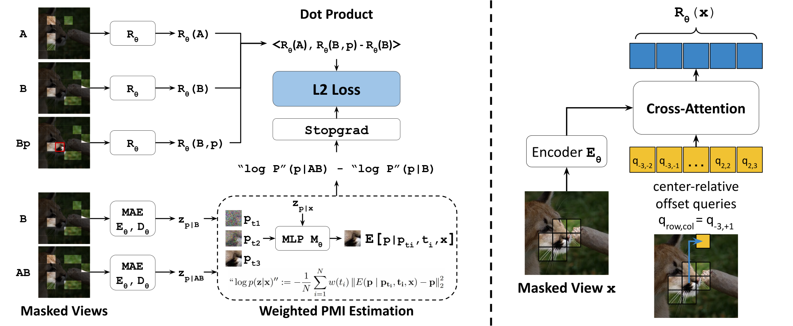
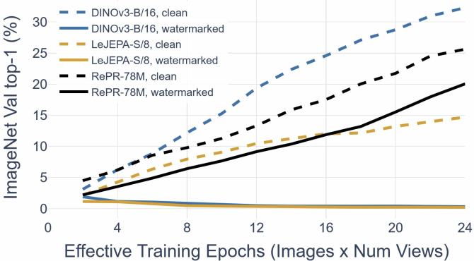
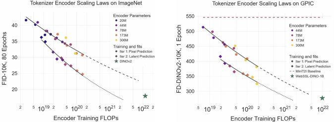
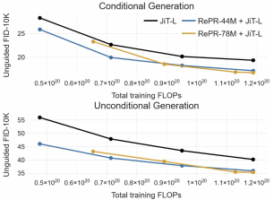

Generative Representation Learning for Scalable Latent Tokenization
Abstract
We introduce an approach for self-supervised representation learning designed to be used as a tokenizer for generative modeling. Our objective supervises a representation loss by factorizing the pointwise mutual information of the data, which we estimate by taking information differences between conditional predictions from a learned generative model. We justify our algorithm theoretically and empirically, demonstrating that our generative approach to representation learning avoids dimensional collapse and feature suppression in cases where commonly used methods like DINO and LeJEPA fail. Moreover, we show our representation learning technique is scalable; expending more compute leads to predictably better latent tokenization. For the first time, we perform a careful analysis of the combined flop efficiency of tokenizer and generative model and demonstrate that our approach is a compute-optimal improvement over direct diffusion for pixel-space generation, obtaining an FID-50K of 2.18 with JiT-L. Applied to ImageNet and the text-to-image dataset GPIC, we show tokenizer encoder scaling laws for diffusability, where extrapolating our approach achieves representations in 7x fewer FLOPs than DINOv2 on ImageNet and 8x fewer FLOPs than WebSSL on GPIC.
Overview
- We introduce an algorithm for representation learning, Relative Prediction Representations (RePR), that is principled and scalable as a tokenizer
- We show scaling laws for tokenization
- Scaling only the tokenizer encoder results in predictable gains in FID, holding diffusion FLOPs constant.
- Training a tokenizer before diffusion is compute-optimal versus pixel diffusion
Motivation
We make two motivating claims:
- The tokenizer is either a scaling axis or should be deleted entirely
- "Everyone should hope that we can throw away tokenization" - Karpathy
- All previous tokenizers, including representation learners, have failed to scale or will fail to scale
- VAE, JEPA, DINO, LeJEPA, AE, MAE, VQ-VAE
Claim 1 is self-evident. The tokenizer either does or doesn't matter at scale.
For Claim 2, we propose three desiderata for tokenizers
What's Required for Scalable Tokenization: A motivating guess.
We hypothesize that all three criteria are necessary for scalable tokenization
Causal Theoretical Grounding
- The loss must directly supervise the representations used as a tokenizer. No intermediate network features are allowed; interpretability does not scale.
Architectural Scalability
- Gradient Descent on Transformers scales. However, older tokenization approaches such as VAEs bottleneck and quantize gradient descent by adding noise (information destroying), as do VQ-VAEs and AutoEncoders with finite precision bottleneck layers.
No Feature Suppression
- Contrastive Learners, as well as LeJEPA, have their losses saturated when exponentially few bits are shared between views (e.g. log batch size). This places excessive burden on the masking function, which is hand engineered and does not get more clever with scale.
Here is a table of where every other approach fails.
| Criterion | Autoencoders | CLS token | Patch features | RePR (ours) |
|||||
|---|---|---|---|---|---|---|---|---|---|
| VAE | AE | VQ-VAE | LeJEPA | MoCo | (Le)JEPA | MAE | DINO | ||
| Causal theory | ✓ | ? | ✓ | ✓ | ✓ | ✗ | ✗ | ✗ | ✓ |
| Architecture scales | ✗ | ✗ | ✗ | ✓ | ✓ | ✓ | ✓ | ✓ | ✓ |
| No feature suppression | ✓ | ✓ | ✓ | ✗ | ✗ | ? | ✓ | ? | ✓ |
Our Approach
Main Idea
Our approach makes the following observations
- Contrastive learners implicitly factorize the Pointwise Mutual Information (PMI) between views of the data (up to an unidentifiable scalar offset \(a(x)\)).\[ \operatorname{PMI}(x,y)=\operatorname{PMI}(y,x)=\log p(y\mid x)-\log p(y). \]
For example, for a contrastive representation model \(R_\theta\),
\[ \langle R_\theta(x),R_\theta(y)\rangle\approx\operatorname{PMI}(x,y)+a(x). \] - The outputs of generative models a) improve predictably with scaling laws and b) can be used directly to estimate the PMI
- We can estimate log-probabilities with a generative model: \(\log P_{G_\theta}(y\mid x)\) and \(\log P_{G_\theta}(y)\).
Then, at a high level, our loss is:
However, this doesn't work immediately for two reasons:
- PMI is dominated by high-frequency bits, not things we care about like semantics
- We solve this with timestep weighting
- Estimating \(\log p(x)\) is intractable as the size of \(x\) grows
- We solve this with a novel bootstrapping technique
PMI from diffusion
PMI can be extracted from generative models
For \(\log p\) from a discrete model, it's trivial.
For \(\log p\) from a diffusion model, it's extractable via a timestep-weighted loss.
- We can use the ELBO, not the probability-flow ODE log det Jacobian.
In this work we use the linear-interpolation (flow-based) schedule \(y_t=(1-t)y+t\epsilon\), with \(\epsilon\sim\mathcal{N}(0,I)\).
The PMI between two points can then be calculated by subtracting their log probability estimates:
Here, we obtain the outer expectation over \(t,\epsilon\) through Monte Carlo sampling, and the inner expectations using a learned denoising model. Although the ELBO is only equal to \(\log p(x)\) with an optimal denoiser, our approximation approaches the true PMI as we improve the prediction.
Trick 1: Timestep weighting
Diffusion models don't directly optimize the ELBO. Instead, they use timestep weighting. We implement this by taking the PMI between a clean and noisy sample:
We then factorize the expectation of the PMI across different noise levels, which we call \(\operatorname{PMI}^{*}\).
Trick 2: Bootstrapping
Likelihood estimation gets harder as the amount of information in the input grows: predicting the probability of a single pixel is easy and calculable with dataset statistics, but predicting the likelihood of an image using a diffusion model may take intractably many Monte Carlo Estimation steps. To avoid this issue, we replace a challenging full-view PMI estimate with a sequence of local PMI increments. Instead of estimating the PMI between \(x\) and an entire large target \(y\), we write \(y\) as tokens \(y_1,\ldots,y_k\) and supervise only the incremental PMI contributed by the next token:
Because these increments telescope, summing them recovers the full PMI:
This makes the likelihood-ratio target easier to estimate than the PMI of the whole input at once.
Full Representation Objective
We combine Timestep Weighting and Bootstrapping to obtain our full representation objective. Given input views \(x\) and \(y\) and an incremental amount of information to add \(z\), we optimize for:
Because \(\operatorname{PMI}^{*}\) is asymmetric, and moreover because PMI can be non-positive-semidefinite, this factorization is bilinear instead of a standard dot product. We implement bilinearity implicitly by conditioning \(R_\theta\) on whether it is on the left or right of the vector product.
Architecture
We have two submodels with optional weight tying. 1) The Prediction Model (to obtain the PMI). 2) The Representation Model (into which we distill the PMI). The Prediction model uses an MAR architecture with a JiT \(x\)-prediction loss. For the representation model, we output full patch features as our representation, treating it as a single very large \(\mathbb{R}^{H\times W\times D}\) vector.
We use cross-attention to hide absolute position information in the representations, enforcing spatial equivariance. This equivariance is effectively a sparsity constraint. If our generative model were an MLP on the full, image-sized representation vector (intractable), this constraint would not matter. Instead, we use a transformer which shares a smaller MLP across all tokens, expecting each token to use the same format. Without this spatial equivariance constraint, the Representation Model could learn to apply an independent orthonormal rotation per token without changing its loss. A downstream transformer would then need to spend a constant number of FLOPs learning these different coordinate systems.

Results
Feature Suppression
Our approach generatively constructs the bits learned in the PMI factorization. Because of this, our approach is fundamentally robust to feature suppression.
We will show this with a toy experiment, introduced by Enigma Inc. We watermark every image patch using a seed determined by the batch index. This results in collapse for LeJEPA and DINO, but only moderately harms our RePR approach.

Tokenizer Encoder Scaling
We demonstrate that scaling only the tokenizer encoder gives predictable gains at a fixed generative model budget.
We use Latent Forcing by default for generative modeling experiments, meaning we use no separate decoder, LPIPS, GAN, or external models. As a result, our tokenization is lossless, so our gains come from improved diffusability, rather than from compression or improved mode seeking behavior. SoTA ImageNet approaches may use heavy compression, but industry uses near-lossless tokenizers at scale.

Compute-Optimality
We demonstrate that dedicating FLOPs to training a tokenizer is compute-optimal versus diffusion.

| Representation | Generative model | Total FLOPs ↓ | FID-50K ↓ | IS ↑ |
|---|---|---|---|---|
| Pixel | JiT-L, 600 epochs | 3.57 × 1020 | 2.36 | 298.5 |
| RePR-78M + Pixel | JiT-L, 440 epochs | 3.49 × 1020 | 2.18 | 338.4 |
Additional Experiments
We find that recursively applying our training technique, by replacing the predicted incremental patches with features from a previous cycle of training, significantly improves performance. Importantly, this maintains the theoretical guarantees of our approach, as the features we predict are themselves a linear factorization of the PMI.
| Iteration | Prediction target | Epochs per iteration | FID-10K ↓ |
|---|---|---|---|
| 1 | Pixels | 600 | 30.68 |
| 2 | Iteration 1 features | 200 + 400 | 24.73 |
| 3 | Iteration 2 features | 200 + 200 + 200 | 23.81 |
We also ablate our approach as a tokenizer for RAE. We avoid RAE for most experiments, because RAE uses an expensive externally pretrained DINO-based GAN, which makes it unclear whether gains are due to the quality of learned representations or simply “borrowing FLOPs.”
| Encoder | FID-50K ↓ |
|---|---|
| MoCo v3-B | 13.84 |
| I-JEPA-H | 12.46 |
| RePR-173M, iteration 3 | 11.13 |
Conclusion
We introduce RePR, a uniquely principled and scalable representation learning algorithm for latent tokenization
Our approach:
- Shares the Theoretical Justification of Contrastive Learning, while using no negatives, no batch statistics, and being robust to feature suppression
- Demonstrates Predictable Scaling Behavior
- Is empirically strong, being compute-optimal versus raw diffusion
Thank you for reading. I'm happy to answer questions on X
Citation
@article{baade2026repr,
title = {Generative Representation Learning for
Scalable Latent Tokenization},
author = {Baade, Alan and Sargent, Kyle and Sitzmann, Vincent
and Chan, Eric Ryan and Johnson, Justin
and Fei-Fei, Li and Wetzstein, Gordon},
journal = {arXiv preprint arXiv:2610.20533},
year = {2026}
}